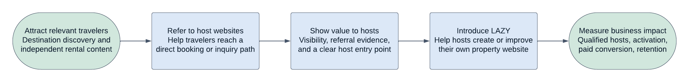
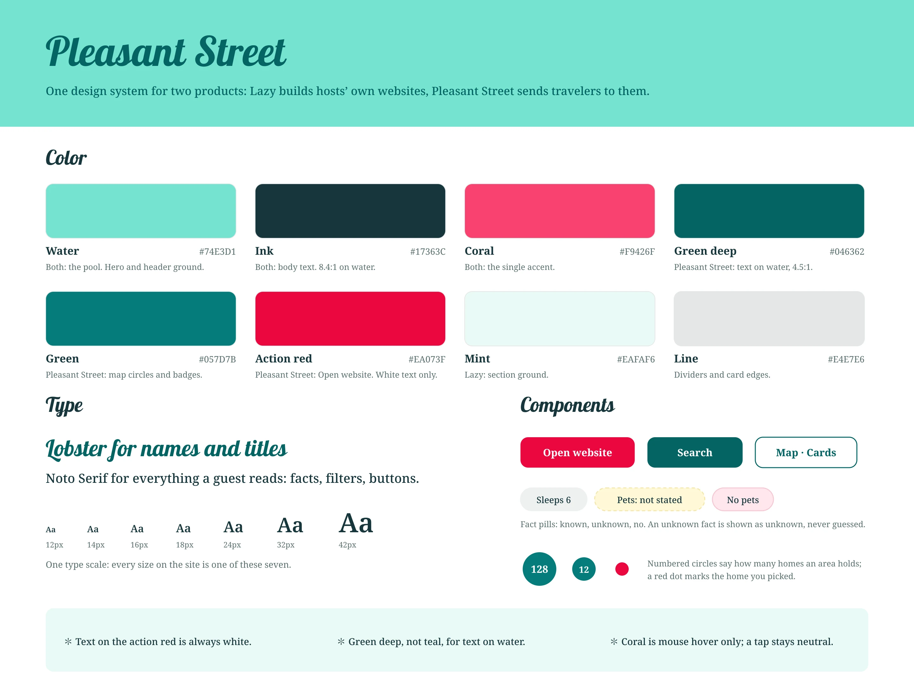
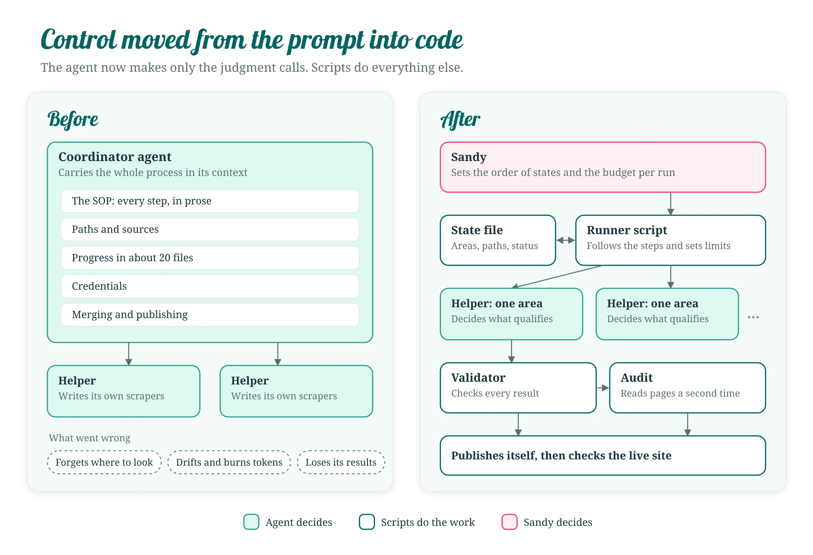
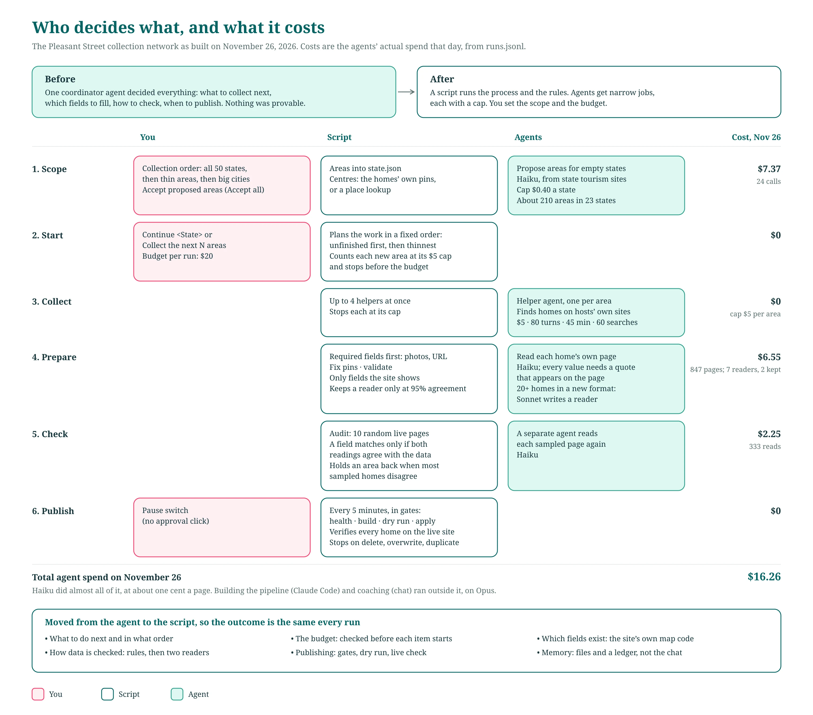
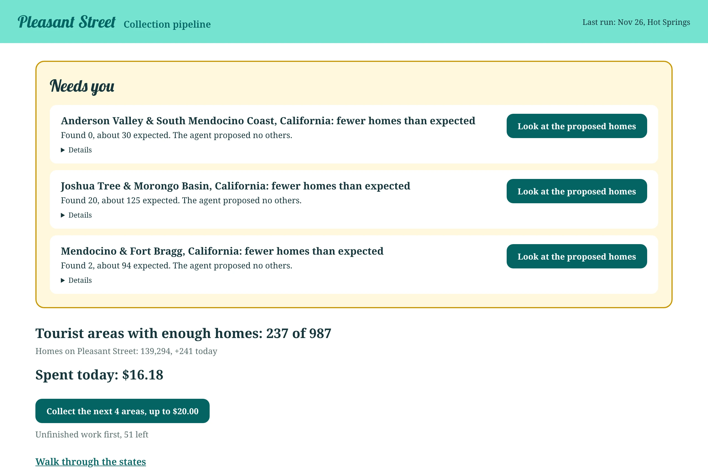
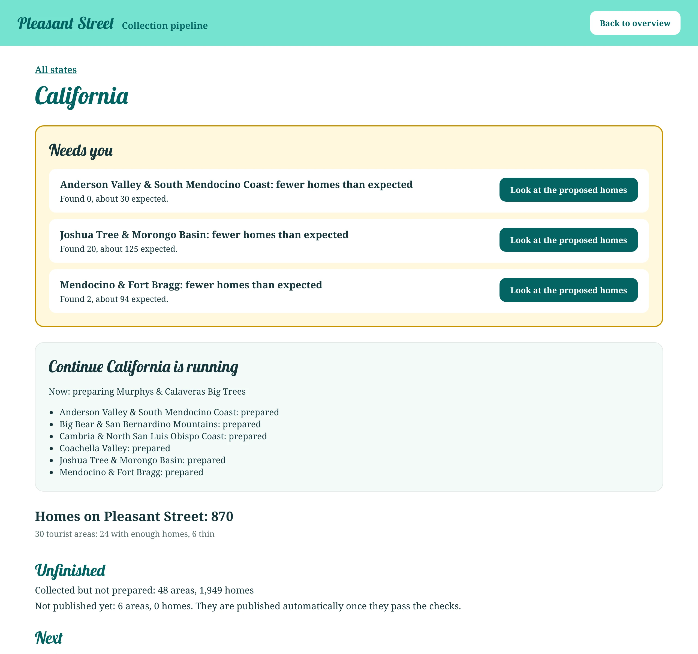
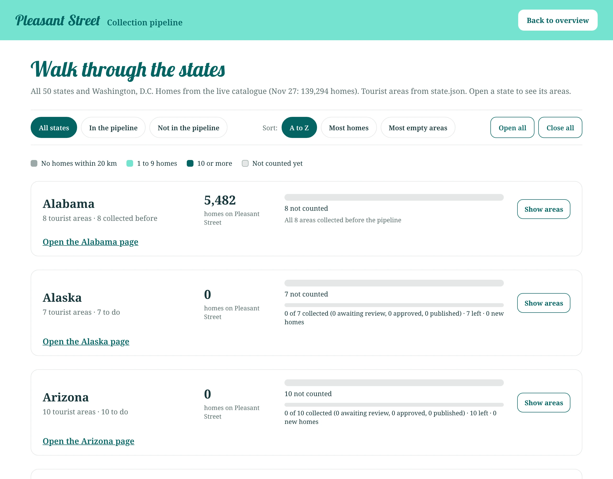

Pleasant Street
Making independent vacation rentals easy to find and book directly.
Travelers use a free map to reach the hosts’ own sites. One design system, shared with LAZY, makes the map friendly; an agent pipeline fills it.
- Team
- Founder and product designer
- Timeline
- 2026 · In production
Problem
Independent hosts can offer direct bookings and still be hard for travelers to find. A map of their homes is only as good as what is on it, and finding enough homes in every tourist area does not scale by hand.
My role
As founder and product designer, I set the product strategy, designed the map on a design system shared with LAZY, and designed the agent pipeline that fills it, from its rules to its console.
Result
139,294 homes on a free map that links travelers to hosts’ own sites. Behind it, a pipeline where code runs the process and agents only read and judge, for about a cent a page.
Homes
the prototype, then the homes live on the map, November 26, 2026
Reading
per page an agent reads; a script checks every quote
Busiest day
all agents together: area proposals, page reading and the audit
Cost
for hosts and travelers; no LAZY purchase required
The problem we set out to solve
Independent hosts can offer direct bookings and still be hard for travelers to find. Direct relationships already exist in rental advertising: regional directories charge hosts for visibility and send travelers to a contact form or, sometimes, to the host’s website.
| Directory | Coverage | Cost of visibility | Traveler’s next step |
|---|---|---|---|
| Pleasant Street | U.S.; 30 states researched, 20 remaining | 100% free for hosts and travelers. No LAZY purchase required. | Open the host’s own website from the map or property card. The host keeps their existing site, booking process and guest relationship. |
| FloridaRentals.com | Florida | Paid host subscriptions; no booking or service fees. Personal-website links are included above the Basic tier in its plan comparison. | Contact the owner or manager through the listing; website links are also offered. Rental arrangements and payments stay with the owner or manager. |
| WeNeedaVacation | Cape Cod, Martha’s Vineyard and Nantucket | Paid host advertising plans; no commissions or guest booking fees. | Contact the owner or manager using the listing’s contact form; the host chooses payment methods. The cited pages do not establish a universal outbound website-link policy. |
Competitor descriptions are based on their linked FAQs, pricing and contact pages, reviewed November 23, 2026.
1. A discovery channel for LAZY
- Product designer
Problem
LAZY gives hosts a website of their own, but travelers still had to find those independent rentals.
Challenge
A link to the host’s own website is not unique on its own: FloridaRentals offers it too. The map had to combine free visibility, links to existing host websites and expanding U.S. coverage.
What I did
Designed the two products around the same host community. Pleasant Street is a free map that sends travelers to the host’s own website and introduces hosts to LAZY. Hosts keep their websites, booking processes and guest relationships; using LAZY is optional. The acquisition path runs from destination discovery to visits to host websites, visible value for hosts and qualified interest in LAZY.

Both products had to look like one family.
2. One design system for two products
- Product designer
Problem
Pleasant Street and LAZY serve the same hosts from two sides: LAZY builds a host’s own website, Pleasant Street sends travelers to it.
Challenge
The two had to feel like one family, while a dense map needs things a marketing site does not: readable text on the water, a clear action, facts that can be unknown.
What I did
Built Pleasant Street on the LAZY tokens: the water, the ink and the coral accent, Lobster for names and Noto Serif for everything a guest reads. Added what the map needs: a deeper green for text on the water, 4.5:1 where the brand teal reaches 2.7:1; an action red for Open website, always with white text; one type scale of seven sizes; and fact pills with three states, known, unknown and no, so an unknown fact is shown as unknown and never guessed.

Then the system had to carry a dense map.
3. A friendly map
- Product designer
Problem
A map full of individual pins becomes difficult to read as inventory grows.
Challenge
Travelers had to compare homes and follow the direct link without learning how the research worked.
What I did
Chose a deliberately “uncool” visual direction drawn from 1950s design: a script wordmark, serif type, a turquoise palette, rounded controls, illustrated houses and restrained motion. Replaced dense pins with numbered circles, kept the map and card views tied to the same filters, and wrote the filters in plain language: capacity, accommodation type, children and pets.

See more: the earlier map, filters, property details, cards, mobile


A friendly map still needs homes on it.
4. Control in code, judgment in the agent
- Product designer
Problem
I designed the collection as a team of AI agents: a coordinator planned each run, helpers each took one area. It worked, but it was expensive and unstable.
Challenge
The agents forgot where to look, drifted from the steps while spending tokens, and forgot what to do with what they found. One agent carried the whole process in its context, and a long set of instructions fades as a session runs.
What I did
Moved the process out of the prompt and into code. A runner script follows the steps and one state file holds every area, source and status, so no agent has to remember anything. Each helper gets one area, hard limits on money, turns and time, and a format the script checks. Only scripts hold the credentials. The rule: the agent decides, scripts do everything else.

Running reliably was not the same as being right.
5. Trust without a person beside it
- Product designer
Problem
The review screen said the first area, Hot Springs, Arkansas, was ready. Its 73 homes held descriptions cut off with “...” and empty pet and child policies the pages did state. The validator checked that fields were well-formed, not that they were true.
Challenge
The AIs I built with, Claude in chat and Claude Code in the terminal, fixed each problem by hand, one instance at a time. That proved the pipeline worked with an AI beside it, not that it worked alone.
What I did
Made every fix a rule that runs for every area. Hand edits to data are banned. Every value is read from the home’s own page, and an agent that reads a page must quote it: a script rejects any value whose quote is not there. When 20 homes share a new page format, an agent writes a reader for it, kept only at 95% agreement. The pipeline collects exactly the fields the public site shows, so price left it.
Then I set the bar from what the map promises: a pointer to a host’s own site, not a guarantee. An area that passes the checks publishes itself, the most probable value beats an empty field, and the audit holds an area back only when most sampled homes disagree with their pages.

With no one checking each area, I needed to see the whole.
6. A console that works by state
- Product designer
Problem
To learn what was full, what was empty and what was waiting for me, I had to ask the coding agent.
Challenge
The first states view counted areas, because areas are what the system stores. I read the map in homes, so the view looked wrong.
What I did
Designed a private console and had Claude Code build it. Rebuilt to count homes, it showed at once that Florida, a third of the map, had no tourist areas at all. The overview shows alerts only when something needs me. Because I plan by state, every state has a page with one button, Continue California, that does the next work for that state in a fixed order and within a budget. For an empty state, an agent reads its tourism sites and proposes its areas: 203 areas in 20 states, accepted in one click.



Every run costs money, so the last question was how much.
7. A budget per run, a model per job
- Product designer
Problem
Every run spends money, and an agent that is stuck can keep spending.
Challenge
Areas differ in size, so no fixed price fits them all, and not every job needs the most expensive model.
What I did
No schedule until the full release: I start each run, with a budget, $20 by default. The planner counts every new area at its $5 cap and stops before the budget. A cap is a fuse, not a price: it stops a stuck helper, which keeps what it found. Page reading, most of the volume, runs on Haiku, the cheapest model, for about a cent a page. The expensive models sit outside the pipeline, in building it.
| Job | Model | Cost | Volume |
|---|---|---|---|
| Propose areas for empty states | Haiku | $7.37 | 23 states |
| Read host pages | Haiku | $6.32 | 847 pages |
| Audit, both readings | Haiku | $2.25 | 333 reads |
| Write readers for new page formats | Sonnet | $0.23 | 7 readers |
| Other | Haiku | $0.09 | — |
| Total | — | $16.26 | — |
Result
The map is live with 139,294 homes, each linking to the host’s own site, on one design system with LAZY. Behind it, the pipeline has taken its first area, Hot Springs, Arkansas, from collection to a live check with no hand edits, recovered and published 701 California homes from a stuck run and updated 550 of them, and proposed 203 tourist areas for 20 empty states. Filling every state is the work in progress.
Homes
the prototype, then the homes live on the map, November 26, 2026
Reading
per page an agent reads; a script checks every quote
Busiest day
all agents together: area proposals, page reading and the audit
Cost
for hosts and travelers; no LAZY purchase required
Lessons
- An SOP is not a control system. The steps that must always happen belong in code.
- Rules, not patches. If a fix would not work tomorrow on an area nobody has looked at, the system has to learn to do it itself.
- Valid is not true. Only a check against the source says a field is right.
- A check that checked nothing is not a pass. Count what was actually checked, not only what failed.
- Set the bar from the product’s promise. A map that points to hosts’ sites needs probable facts, not certified ones.
- Give the person the unit they think in. I read the map in homes and plan by state, so the console does too.
- Cap every run, and pay for the model the job needs. The cheapest model handles the volume; the expensive one is for judgment.